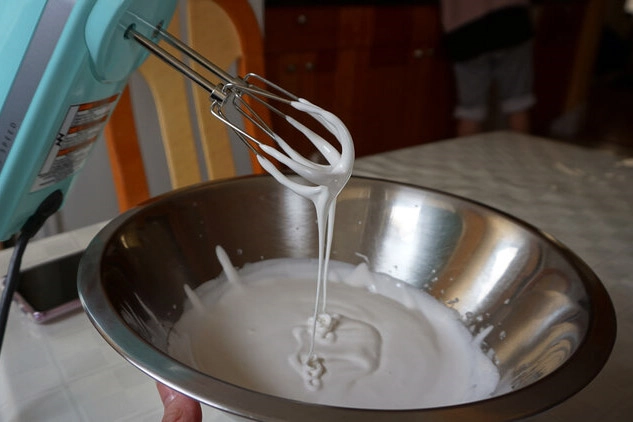
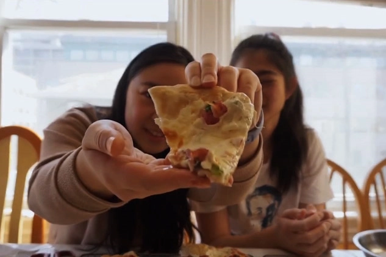
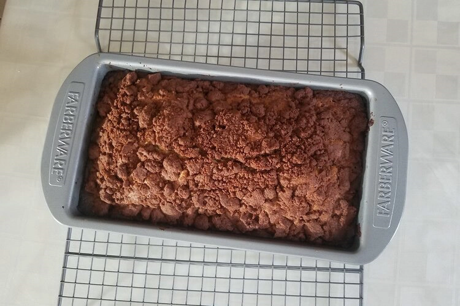
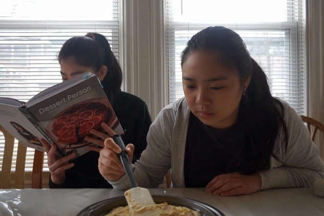
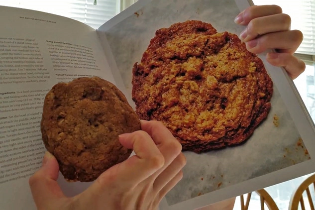
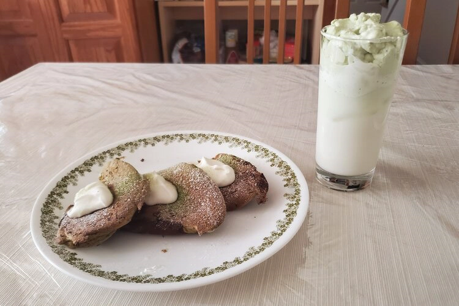

Food | 4/4/21
Happy Easter! Hopefully you’re able to enjoy some good weather and have an eventful weekend celebrating!

Food | 3/25/21
Having the luxury of going to school everyday in Brooklyn came with its perks, one being Brooklyn pizza, which became a staple in our New York City diet.

Food | 3/21/21
Have you ever thought about the difference between a loaf cake and a pound cake?

Food | 3/14/21
After moving to New York City, Korean food became a staple in our diet and Koreatown became one of our most visited spots for food that first year we lived there.

Food | 3/11/21
Cornbread, it’s one of those foods that you either like or don’t like. We’re both not huge fans of cornbread but on occasion, we’d enjoy a nibble.

Food | 3/4/21
Have you ever wondered what it would be like to bake without all the precise science of measuring out ingredients? Have you ever just wanted to throw away all your measuring cups and just vicariously dump everything into a bowl?

Food | 2/28/21
What’s better than cheese and cured meats? Wine paired with your board of cheese and cured meats!

Food | 2/25/21
Our love for baking and cookies brings us back to another Back to Back Baking where Bonnie takes on the challenge of baking Oat and Pecan Cookies only with Emily’s verbal guidance!

Food | 2/21/21
It's the ice cream that’s been floating around on all our Instagram feeds! After having seen countless influencers and posts about Jeni’s Splendid Ice Creams, we had to give it a try!

Food | 2/11/21
I’ve been on a little bit of a matcha craze lately and found another recipe that I thought would be great to add to the list --matcha soufflé pancakes!!

Food | 2/4/21
Thinking about the miso paste that has been living in my fridge for the longest time, I decided to do some recipe exploring! I always knew condiments could be very multipurpose but I never thought something savory could become something sweet!

Food | 1/31/21
With the amount of baking that we do, you probably know that we both have a sweet tooth and soft spot for desserts